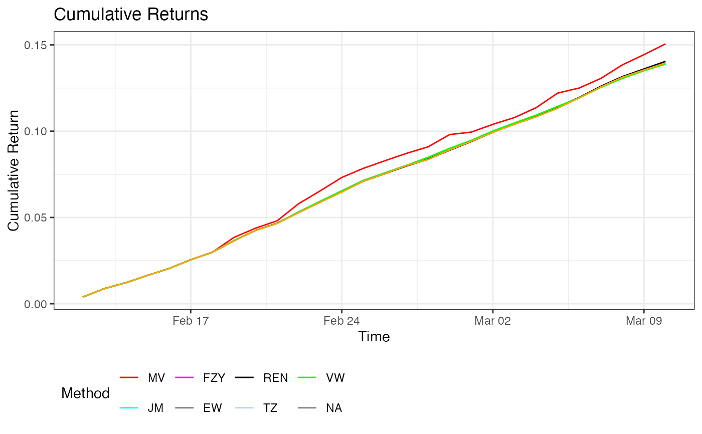
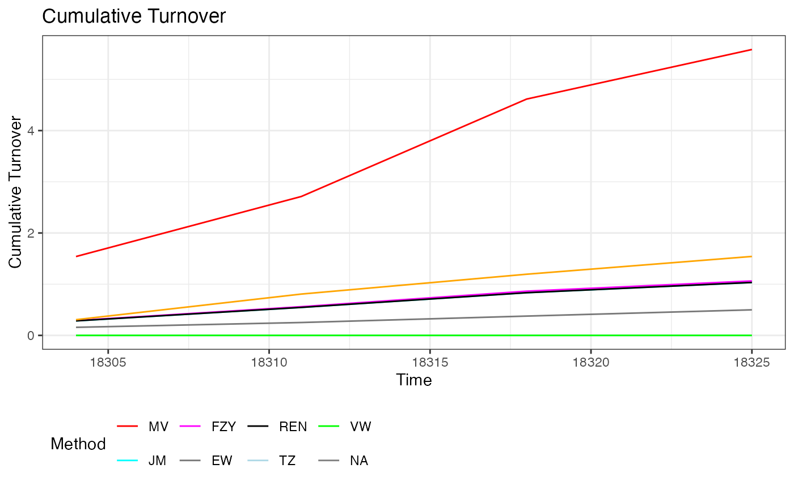

perform_analysis.RdThis function performs portfolio analysis using various methods such as Mean-Variance (MV), James-Stein (JM), LASSO, Ridge Regression, Equal Weighting (EW), among others. It calculates weights, turnover, returns, Sharpe ratios, volatility, and maximum drawdown for each method.
perform_analysis(x, mon, count, Date, num_cores = 7)A numeric matrix where each column represents asset returns and rows represent time periods.
A numeric vector representing the number of months since the start date for each time period.
A numeric vector indicating the number of entries per month.
A vector of Date objects representing the dates of the time periods.
The number of cores to use for parallel processing. Default is 7.
A list containing the following components:
A ggplot object representing the cumulative returns for each method.
A ggplot object representing the cumulative turnover for each method.
A numeric vector of the mean turnover for each method.
A numeric vector of the Sharpe ratio for each method.
A numeric vector of the annualized volatility for each method.
A numeric vector of the maximum drawdown for each method.
The mean turnover for the volume-weighted (VW) portfolio.
The Sharpe ratio for the VW portfolio.
The annualized volatility for the VW portfolio.
The maximum drawdown for the VW portfolio.
The function iterates through different time periods and calculates portfolio weights, turnover, and returns for multiple methods including Mean-Variance (MV), James-Stein (JM), and various regularization techniques. It also computes performance metrics like the Sharpe ratio, volatility, maximum drawdown, and cumulative turnover for each method. Visualization of the cumulative returns and turnover is generated using ggplot2.
# \donttest{
# Create a larger example dataset that aligns with the function's expectations
set.seed(123)
x <- matrix(runif(700), ncol = 10) # 10 columns (assets), 70 rows (observations)
mon <- rep(1:10, each = 7) # Example month identifiers, 7 observations per month
count <- rep(7, 10) # Example count per month (7 entries per month)
Date <- as.Date('2020-01-01') + 0:69 # Example date sequence (70 days)
# Run the analysis with 2 cores
result <- perform_analysis(x, mon, count, Date, num_cores = 2)
#> Warning: executing %dopar% sequentially: no parallel backend registered
#> Loading required package: Matrix
#> Loaded glmnet 4.1-8
#> Processed month 1
#> Processed month 2
#> Processed month 3
#> Processed month 4
# Display results
print(result$cumulative_return_plot)

print(result$cumulative_turnover_plot)

# }